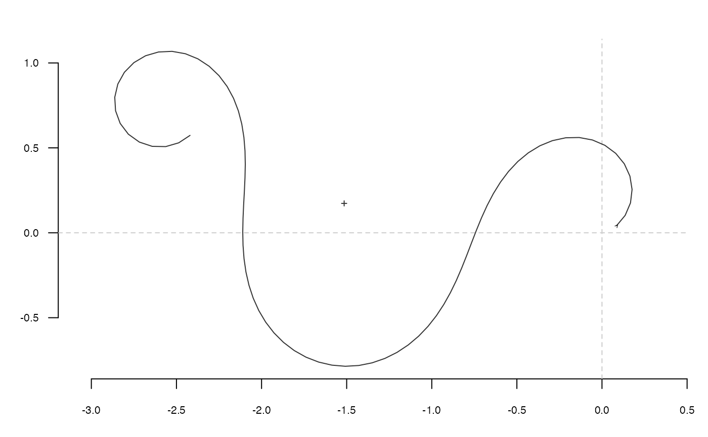

tfourier_i uses the inverse tangent angle Fourier transformation to
calculate a shape, when given a list with Fourier coefficients, typically
obtained computed with tfourier.
tfourier_i( tf, nb.h, nb.pts = 120, force2close = FALSE, rescale = TRUE, perim = 2 * pi, thetao = 0 )
| tf | a list with ao, an and bn components, typically as returned by tfourier |
|---|---|
| nb.h |
|
| nb.pts |
|
| force2close |
|
| rescale |
|
| perim | The perimeter length to rescale shapes. |
| thetao |
|
A list with components:
vector of
x-coordinates.
vector of y-coordinates.
vector of interpolated changes on the tangent angle.
vector of position on the perimeter (in radians).
See tfourier for the mathematical background.
Directly borrowed for Claude (2008), and called ifourier2 there.
Zahn CT, Roskies RZ. 1972. Fourier Descriptors for Plane Closed Curves. IEEE Transactions on Computers C-21: 269-281.
Claude, J. (2008) Morphometrics with R, Use R! series, Springer 316 pp.
Other tfourier:
tfourier_shape(),
tfourier()
tfourier(bot[1], 24) #> $ao #> [1] 7.733739 #> #> $an #> [1] 0.0452247795 -0.3755623338 0.0276855331 0.9411732992 -0.3990148731 #> [6] -0.7763824605 -0.5768666699 0.0440901651 -0.7604537570 -0.4636638848 #> [11] -0.6086940781 -0.1408419257 -0.2906453466 0.1360186290 -0.2905320818 #> [16] -0.0013913889 0.0999975983 0.2531539067 -0.2409440735 -0.0107735036 #> [21] -0.0386305555 -0.0238992918 -0.1631252535 -0.0004085881 #> #> $bn #> [1] 0.008457058 2.526564125 -0.554083930 0.313312077 -0.288987146 #> [6] 0.032821965 -0.226300468 0.409651090 -0.021830547 0.015586993 #> [11] 0.414880500 0.677636372 0.197011887 0.180444429 0.433515510 #> [16] 0.237573437 0.107717915 0.027571558 0.054653201 -0.170505441 #> [21] 0.130595490 -0.014178384 -0.048221455 -0.127039009 #> #> $phi #> [1] 0.00000000 0.03394792 6.12970584 6.22607257 6.18054224 6.19051042 #> [7] 6.13580603 5.99700591 5.99842093 5.99084704 5.86041492 5.81488459 #> [13] 5.76506244 5.62887223 5.58334190 5.53781157 5.39732954 5.35179921 #> [19] 5.22136709 5.16746875 5.12193843 5.06723404 5.07720222 5.03804123 #> [25] 5.03308691 5.08250829 5.03697796 5.17966914 5.21216935 5.41953309 #> [31] 5.77457625 5.99961627 6.05629266 6.19411028 6.06367816 6.15041823 #> [37] 6.20005411 6.10694068 6.10899345 6.11083173 6.24864935 6.21627616 #> [43] 0.15041122 0.41687566 0.72706839 0.84208756 0.93719564 0.93924841 #> [49] 0.94130119 0.84818776 0.80265743 0.85207881 0.75917987 0.75672633 #> [55] 0.62053611 0.71690284 0.62442716 0.58361378 0.52907469 0.53478153 #> [61] 0.44702280 0.39677552 0.39819054 0.39061666 0.21281593 0.16728561 #> [67] 0.07417217 6.26424405 6.21871372 6.07886944 5.99538267 5.94148434 #> [73] 5.89595401 5.85879168 5.85121780 5.90000142 6.00172285 5.85652387 #> [79] 5.95289060 6.03171526 6.08391184 6.21482206 6.12821895 6.02776111 #> [85] 5.90179053 5.77058090 5.73820771 5.54311764 5.45064197 5.40081982 #> [91] 5.40652666 5.31405098 5.27323760 5.21869850 5.17746000 5.13664661 #> [97] 5.13334469 5.04086901 4.99104686 4.62111347 5.01682255 4.60719411 #> [103] 5.30626827 6.00978848 6.15257805 6.15247100 6.15452378 6.10899345 #> [109] 6.19573352 0.50480943 1.60303743 0.87544326 1.21632143 1.02825629 #> [115] 1.03030907 0.88982703 0.79735136 0.79876638 0.84818776 0.70770572 #> [121] 0.61523005 0.51420121 0.66606644 0.52558441 0.48434590 0.34125395 #> [127] 0.16219458 0.14695801 6.24944229 6.18612024 6.12136151 6.11662487 #> [133] 6.17219791 6.26019663 0.02904262 0.07417217 0.07622495 0.08278017 #> #> $t #> [1] 0.00000000 0.04553033 0.09106066 0.13659098 0.18212131 0.22765164 #> [7] 0.27318197 0.31871230 0.36424263 0.40977295 0.45530328 0.50083361 #> [13] 0.54636394 0.59189427 0.63742460 0.68295492 0.72848525 0.77401558 #> [19] 0.81954591 0.86507624 0.91060657 0.95613689 1.00166722 1.04719755 #> [25] 1.09272788 1.13825821 1.18378854 1.22931886 1.27484919 1.32037952 #> [31] 1.36590985 1.41144018 1.45697051 1.50250083 1.54803116 1.59356149 #> [37] 1.63909182 1.68462215 1.73015248 1.77568280 1.82121313 1.86674346 #> [43] 1.91227379 1.95780412 2.00333445 2.04886477 2.09439510 2.13992543 #> [49] 2.18545576 2.23098609 2.27651642 2.32204674 2.36757707 2.41310740 #> [55] 2.45863773 2.50416806 2.54969839 2.59522871 2.64075904 2.68628937 #> [61] 2.73181970 2.77735003 2.82288036 2.86841068 2.91394101 2.95947134 #> [67] 3.00500167 3.05053200 3.09606233 3.14159265 3.18712298 3.23265331 #> [73] 3.27818364 3.32371397 3.36924430 3.41477462 3.46030495 3.50583528 #> [79] 3.55136561 3.59689594 3.64242627 3.68795659 3.73348692 3.77901725 #> [85] 3.82454758 3.87007791 3.91560823 3.96113856 4.00666889 4.05219922 #> [91] 4.09772955 4.14325988 4.18879020 4.23432053 4.27985086 4.32538119 #> [97] 4.37091152 4.41644185 4.46197217 4.50750250 4.55303283 4.59856316 #> [103] 4.64409349 4.68962382 4.73515414 4.78068447 4.82621480 4.87174513 #> [109] 4.91727546 4.96280579 5.00833611 5.05386644 5.09939677 5.14492710 #> [115] 5.19045743 5.23598776 5.28151808 5.32704841 5.37257874 5.41810907 #> [121] 5.46363940 5.50916973 5.55470005 5.60023038 5.64576071 5.69129104 #> [127] 5.73682137 5.78235170 5.82788202 5.87341235 5.91894268 5.96447301 #> [133] 6.01000334 6.05553367 6.10106399 6.14659432 6.19212465 6.23765498 #> #> $perimeter #> [1] 2513.886 #> #> $thetao #> [1] -1.508378 #> #> $x1 #> [1] 37 #> #> $y1 #> [1] 561 #> tfourier_shape()  #> x y #> [1,] 0.08558707 0.041570598 #> [2,] 0.13636059 0.102789100 #> [3,] 0.16745537 0.175992724 #> [4,] 0.17676629 0.254979828 #> [5,] 0.16414838 0.333506538 #> [6,] 0.13120621 0.405897621 #> [7,] 0.08090770 0.467506997 #> [8,] 0.01710228 0.514988838 #> [9,] -0.05597619 0.546376620 #> [10,] -0.13415474 0.560997465 #> [11,] -0.21366992 0.559267798 #> [12,] -0.29139964 0.542422988 #> [13,] -0.36497975 0.512229909 #> [14,] -0.43282259 0.470720805 #> [15,] -0.49406273 0.419973385 #> [16,] -0.54845772 0.361948902 #> [17,] -0.59626813 0.298389320 #> [18,] -0.63813608 0.230767352 #> [19,] -0.67497481 0.160279309 #> [20,] -0.70787572 0.087869463 #> [21,] -0.73803459 0.014275317 #> [22,] -0.76669492 -0.059915254 #> [23,] -0.79510461 -0.134202169 #> [24,] -0.82448092 -0.208112167 #> [25,] -0.85597930 -0.281143037 #> [26,] -0.89066179 -0.352716638 #> [27,] -0.92946277 -0.422143864 #> [28,] -0.97315093 -0.488604384 #> [29,] -1.02228861 -0.551143530 #> [30,] -1.07719122 -0.608687932 #> [31,] -1.13789124 -0.660080189 #> [32,] -1.20411184 -0.704131152 #> [33,] -1.27525597 -0.739686299 #> [34,] -1.35041522 -0.765700589 #> [35,] -1.42840153 -0.781314409 #> [36,] -1.50780193 -0.785922287 #> [37,] -1.58705353 -0.779226131 #> [38,] -1.66453318 -0.761266148 #> [39,] -1.73865366 -0.732425040 #> [40,] -1.80795764 -0.693404353 #> [41,] -1.87120017 -0.645175331 #> [42,] -1.92741261 -0.588909736 #> [43,] -1.97594323 -0.525898351 #> [44,] -2.01647287 -0.457465872 #> [45,] -2.04900731 -0.384890631 #> [46,] -2.07385063 -0.309336245 #> [47,] -2.09156537 -0.231800164 #> [48,] -2.10292625 -0.153081766 #> [49,] -2.10887358 -0.073770449 #> [50,] -2.11047155 0.005747488 #> [51,] -2.10887460 0.085265445 #> [52,] -2.10530350 0.164719224 #> [53,] -2.10103036 0.244138340 #> [54,] -2.09737037 0.323588074 #> [55,] -2.09567604 0.403104016 #> [56,] -2.09732874 0.482620834 #> [57,] -2.10372125 0.561897512 #> [58,] -2.11622444 0.640442569 #> [59,] -2.13613197 0.717444815 #> [60,] -2.16457791 0.791717854 #> [61,] -2.20242543 0.861669413 #> [62,] -2.25012935 0.925308960 #> [63,] -2.30758165 0.980307953 #> [64,] -2.37395703 1.024125362 #> [65,] -2.44758333 1.054205634 #> [66,] -2.52586812 1.068246564 #> [67,] -2.60531480 1.064520780 #> [68,] -2.68165785 1.042218461 #> [69,] -2.75013449 1.001763483 #> [70,] -2.80588961 0.945044680 #> [71,] -2.84448469 0.875502781 #> [72,] -2.86245351 0.798025189 #> [73,] -2.85782502 0.718625990 #> [74,] -2.83052363 0.643924651 #> [75,] -2.78256462 0.580477120 #> [76,] -2.71798886 0.534048398 #> [77,] -2.64252329 0.508936572 #> [78,] -2.56300305 0.507457893 #> [79,] -2.48663630 0.529678951 #> [80,] -2.42022345 0.573439550